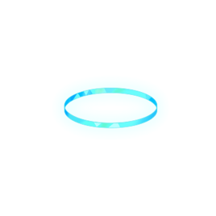

Free & Open Source
Aronasay is licensed under GPL-3.0 and is FOSS!
Contribute, modify, and share with the community!

aronasayCowsay, but Arona is the cow. Pipe (almost) anything through her and she says it back.
A CLI program like cowsay, except the talking cow is Arona from Blue Archive. Give her a string, or pipe her one, and she prints it in a speech bubble with your pick of ASCII art.
Several art variants ship with it, so your MOTD, your shell greeting, and your git hooks can all sound a little more like Schale. Inspired by Mon4sm's Momoisay.
Aronasay is licensed under GPL-3.0 and is FOSS!
Contribute, modify, and share with the community!
Built with Python and supports version 3.6 and above using only the standard library!
Run one of these in your terminal. Both fetch the same installer and need administrator privileges.
curl -fsSL https://raw.githubusercontent.com/arch2kx/aronasay/main/install/install.sh | sudo sh
wget -qO- https://raw.githubusercontent.com/arch2kx/aronasay/main/install/install.sh | sudo sh